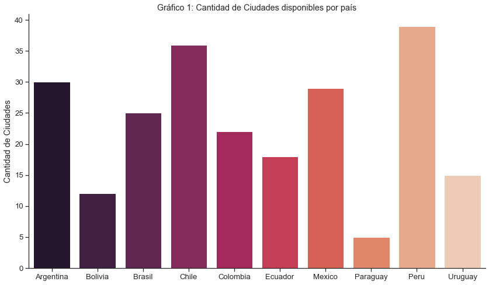
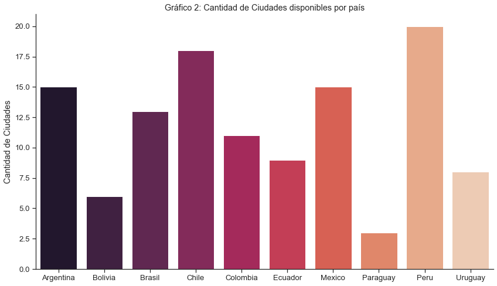
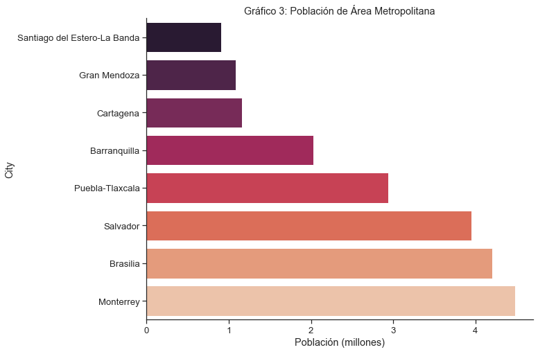
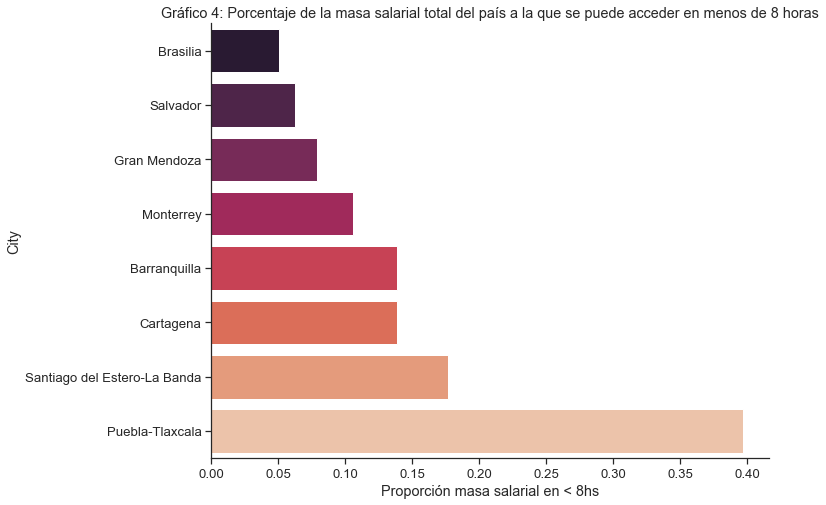
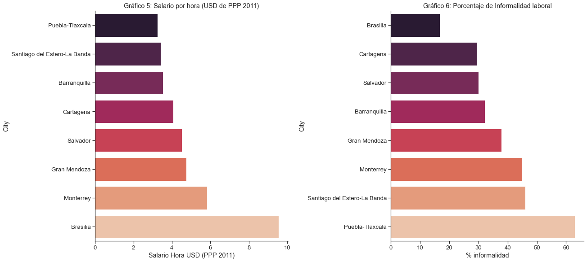
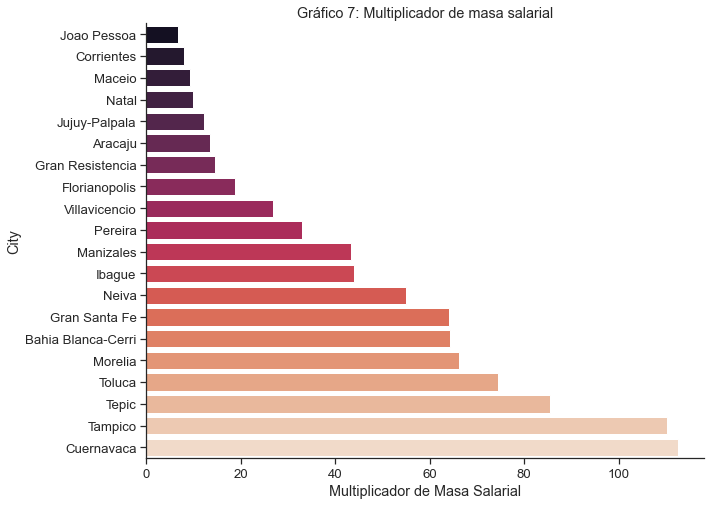

MEDICIÓN DE LA PRODUCTIVIDAD EN CIUDADES DE LATINOAMÉRICA
El objetivo de la presente consultoría es identificar los principales determinantes de los niveles de productividad para una selección de ciudades de América Latina. Se intentará reunir un conjunto de indicadores y métricas que reflejarán la situación actual de la productividad de dichas ciudades en un sentido amplio. Estos indicadores se encuentran segmentados según diferentes ámbitos de políticas para la productividad siguiendo “Determinantes de la Productividad en las Ciudades y Políticas Públicas para su Mejora”, de Guillermo Alves y Pablo López (2020): Conectividad Interna, Conectividad Externa, Trabajo y Conocimiento, Conglomerados y Cadenas de Valor, Facilitación de Negocios. A su vez, cada uno de los indicadores se puede relacionar con entre uno y cuatro ámbitos de productividad: Acceso a insumos, Cooperación entre empresas, Competencia y Empleo.
El primer paso entonces, será realizar una preselección de las ciudades que serán objeto de análisis. Para ello se trabajó en base a indicadores previamente identificados en la consultoría Alves, López, Carreras (Julio 2020), para luego complementar y ampliar.
En este primer producto, se explicarán los fundamentos de la mencionada preselección de ciudades que serán objeto de la consultoría. Haciendo uso de las ya mencionadas métricas surgidas de Alves, López, Carreras (Julio 2020), se intentará generar una muestra diversa de ciudades en términos de las problemáticas de productividad a las que éstas se enfrentan. En segundo lugar, se resumirán cuáles son los indicadores para los cuáles se posee información y para cuáles hará falta incorporar nueva información. Esto para lograr que las métricas abarquen la totalidad de los ámbitos planteados.
Bases y ciudades disponibles
Las tres principales bases de datos de las que se dispone para el presente análisis son:
- Distancias: Esta base posee información sobre distancias/tiempos de viaje entre las urbes. Esta sirve como principal input para los indicadores de Conectividad Externa e incluye a más de 420 ciudades de Latinoamérica.
- Sectores: Corresponde con datos de la participación de las distintas actividades económicas en cada ciudad. Incorpora variables como salario y empleo por sector y sirve como principal input para indicadores de Conglomerados y Cadenas de Valor. Cuenta con una muestra de 279 ciudades.
- Empleo y educación: esta base posee información respecto de variables como salario, desempleo y educación de la población. Los indicadores de Trabajo y Conocimiento provienen de esta base. Posee una muestra de más de 275 ciudades.
Estas serán las bases a utilizar para intentar segmentar a las ciudades en el presente análisis. Una vez unificadas las mismas, contamos con un total de 239 ciudades de amércia latina.

Criterios de preselección de Ciudades
El principal objetivo de este trabajo consiste en evaluar a las ciudades de acuerdo a diferentes características y lograr una preselección de urbes que permita su posterior comparación. Se intentará segmentar a las ciudades a partir de distintos criterios para luego utilizarlas a modo de “grupos de control” en análisis más exhaustivos. Se caracterizará a las urbes de acuerdo a su población, sus principales sectores económicos y su cercanía a “grandes mercados”. Más concretamente, los criterios de segmentación se pueden resumir de la siguiente manera:
- Principales actividades económicas de la ciudad: El primer criterio utilizado corresponde a la participación de tres actividades económicas seleccionadas en las masas salariales totales de cada ciudad. Las actividades elegidas por su importancia fueron: Agrícola (actividades primarias), Industrias de Baja Tecnología y Resto de la Industria Manufacturera. Para cada uno de esos sectores, se calculó la proporción de la masa salarial que ese sector representa en la masa salarial total de la ciudad, para luego dividirla por el promedio de ese mismo valor a nivel nacional. De esta manera, si el valor del ratio se encuentra por encima de uno, significa que la masa salarial que aporta el sector en cuestión en la ciudad es mayor al valor promedio para el país y denotaría cierta especialización de la urbe en esa actividad económica. Este enfoque permite seleccionar tres grupos de ciudades por la importancia que los sectores elegidos tienen en su actividad económica total y lograr un ejercicio comparativo más enriquecedor. La selección corresponde a las ciudades que presentaron los mayores ratios para cada país.
- Población del Área Metropolitana: El segundo segmento se conforma de ciudades que forman parte de zonas metropolitanas de importancia. Habiendo filtrado inicialmente las “grandes metrópolis” de la región, este criterio permite encontrar ciudades que componen polos económicos de importancia y representan mercados atractivos en sí mismos. Si bien el criterio no estuvo relacionado con la cercanía/lejanía a mercados de importancia, muchas de estas ciudades no logran acceder a porcentajes importantes de las masas salariales de su país en menos de 9 horas de automóvil.
- Cercanía a Mercados: El último grupo se compone de ciudades que poseen uno o más centros de consumo significativos a una distancia que se pueda recorrer en menos de 9 horas (en automóvil). Estos centros de consumo son grandes en relación a la ciudad en cuestión y deberían generar un impacto significativo en la actividad económica de la urbe. Para este parámetro, se calculó cuánto crece la masa salarial a la que se puede acceder desde la ciudad en menos de 9 horas de automóvil. Este valor resulta de dividir la masa salarial total del país a la que se puede acceder en menos de 9 horas de automóvil desde la ciudad, por la masa salarial total de la ciudad. Esto representa entonces un coeficiente de “Multiplicación de masa salarial”.
Una vez preseleccionadas las ciudades que componen cada grupo, se mostrarán variables relacionadas a la productividad que se encuentran disponibles. Dichas variables serán:
- Población de la ciudad
- Población total de la zona metropolitana (en caso de que esté disponible)
- Salario por hora en USD (ajustados por “paridad de poder adquisitivo” del año 2011)
- Tasa de desempleo
- Porcentaje de asalariados informales
- Porcentaje de la población con secundario finalizado
- Porcentaje de la población con educación superior finalizada
- Porcentaje de la masa salarial del país a la que se puede acceder en menos de 8 horas de automóvil (en caso de que sea relevante)
- Multiplicador de la masa salarial en menos de 9 horas de automóvil (en caso de que sea relevante)
Selección de ciudades según actividad económica
Como se mencionó más arriba, se seleccionaron tres grupos de ciudades según la participación de tres actividades económicas de interés: Agropecuaria, Industria de Baja Tecnología y Resto de la Industria. El criterio aplicado a la base de 239 ciudades, para cada uno de estos grupos, fue el mismo:
- De la base inicial se eliminan las urbes cuya zona metropolitana posea más de 5 millones de habitantes. A partir de lo anterior se eliminan 8 ciudades de esa base, las cuáles se muestran en la tabla 1.
Tabla 1: Ciudades eliminadas por población Población estimada de Zona Metro (millones) Salario Horario (PPP 2011) Tasa de Desempleo Country City Argentina CABA y Partidos del GBA 15.41 4.84 12.52 Brasil Belo Horizonte 5.83 4.83 10.39 Rio de Janeiro 12.28 6.60 14.52 Sao Paulo 21.09 6.61 12.26 Chile Región Metropolitana de Santiago 6.68 8.32 7.62 Colombia Bogota 9.29 5.56 10.43 Mexico Valle de México 20.89 4.52 3.80 Peru Callao y Lima 9.67 4.91 5.27 Una vez eliminadas las grandes urbes, contamos con 231 ciudades disponibles para analizar. Esta entrega busca trabajar con ciudades intermedias (en términos de poblaciones) de cada país. Es por lo anterior que, de la muestra de 231 ciudades, se toman las ciudades de cada país que se encuentren por encima del percentil 50 de población. Es decir, nos quedaremos con la mitad de las ciudades de cada país que posean mayor población. En total, contamos con 118 ciudades de latinoamérica. El gráfico 2 muestra la cantidad de ciudades totales de cada país con las que se trabajará la sección de "sectores".

Esta muestra de ciudades es la que será utilizada para los tres análisis de sectores que siguen. Los pasos 3, 4 y 5 serán repetidos para esta misma base, pero cambiando el sector económico a analizar.
- El paso siguiente consiste en calcular, para cada ciudad, el porcentaje de la masa salarial adjudicada al sector en cuestión (Agro, Baja Tecnología y Resto de la industria). Además calculamos el valor promedio de ese sector para todas las ciudades de ese país (de la muestra de 118 ciudades). Además, para facilitar la comparación, se calcula el ratio entre el valor de la ciudad y el promedio del país.
- Por último, se preseleccionan las ciudades que presentan los valores de ratios más altos para cada país: serán elegidas las principales cinco ciudades de cada sector para los casos de Argentina, Brasil, Colombia y Mexico, mientras que para el resto de los países se preseleccionarán sólo las dos primeras.
Si bien la preselección de ciudades de cada sector no significa que dicha actividad será la más importante de la ciudad, si denota que esta aporta una masa salarial significativa en comparación con el promedio del país.
Sector Agrícola y actividades primarias
El criterio se aplicó de manera general para todas las ciudades que pasaron el filtro de población intermedia. Como se mencionó más arriba, se muestran las cinco principales ciudades de Argentina, Brasil, México y Colombia y las dos principales ciudades para el resto de los países. La tabla 2 muestra los cálculos de proporción de masa salarial afectada a actividades agropecuarias para estas ciudades. Además se muestra el promedio de dicho valor para cada país, y la relación entre los dos anteriores (ratio). Las ciudades se ordenan primero por país (alfabéticamente), y luego por la relación entre los coeficientes de masa salarial de la ciudad y el país (decreciente).
| Población estimada (millones) | Participación sector agropecuario en M.S. | Promedio País | Relación | ||
|---|---|---|---|---|---|
| Country | City | ||||
| Argentina | Neuquen-Plottier | 0.34 | 0.08 | 0.02 | 3.55 |
| Gran San Juan | 0.47 | 0.04 | 0.02 | 1.88 | |
| Gran Mendoza | 1.08 | 0.04 | 0.02 | 1.69 | |
| Bahia Blanca-Cerri | 0.31 | 0.03 | 0.02 | 1.25 | |
| Gran Tucuman-Tafi Viejo | 1.45 | 0.03 | 0.02 | 1.21 | |
| Brasil | Goiania | 2.42 | 0.11 | 0.03 | 3.18 |
| Fortaleza | 3.99 | 0.05 | 0.03 | 1.56 | |
| Vitoria | 1.91 | 0.05 | 0.03 | 1.39 | |
| Belem | 2.40 | 0.03 | 0.03 | 0.94 | |
| Curitiba | 3.60 | 0.03 | 0.03 | 0.90 | |
| Colombia | Bucaramanga | 1.12 | 0.05 | 0.03 | 1.64 |
| Villavicencio | 0.53 | 0.05 | 0.03 | 1.58 | |
| Armenia | 2.96 | 0.04 | 0.03 | 1.41 | |
| Santa Marta | 0.52 | 0.03 | 0.03 | 1.13 | |
| Pereira | 0.59 | 0.03 | 0.03 | 1.05 | |
| Mexico | La Laguna | 1.22 | 0.05 | 0.02 | 1.97 |
| Hermosillo | 0.81 | 0.04 | 0.02 | 1.80 | |
| Mérida | 0.78 | 0.04 | 0.02 | 1.52 | |
| Colima-Villa de Álvarez | 0.71 | 0.04 | 0.02 | 1.52 | |
| Culiacán | 3.22 | 0.03 | 0.02 | 1.41 | |
| Bolivia | Tomas Frías/Potosí | 0.21 | 0.20 | 0.07 | 3.10 |
| Cercado/Oruro | 0.26 | 0.06 | 0.07 | 0.89 | |
| Chile | Calama | 0.18 | 0.28 | 0.11 | 2.52 |
| Copiapo | 0.18 | 0.25 | 0.11 | 2.23 | |
| Ecuador | Machala | 0.24 | 0.13 | 0.04 | 2.91 |
| Manta | 0.22 | 0.06 | 0.04 | 1.41 | |
| Paraguay | Itapúa | 0.61 | 0.34 | 0.13 | 2.65 |
| Alto Paraná | 0.83 | 0.03 | 0.13 | 0.20 | |
| Peru | Sullana | 0.16 | 0.29 | 0.12 | 2.48 |
| Cajamarca | 0.20 | 0.21 | 0.12 | 1.77 | |
| Uruguay | Rocha | 0.07 | 0.15 | 0.10 | 1.56 |
| Melo | 0.09 | 0.15 | 0.10 | 1.53 |
Para presentar indicadores adicionales de este grupo, selecionamos las ciudades con mayor ratio para cada país, y agregamos las que presentan mayor población para Argentina, Brasil, Colombia y Mexico. En la tabla 3 se observan indicadores relacionados a la productividad de estas urbes.
| Población (millones) | Salario Hora USD (PPP 2011) | Brecha: Salario / Salario ciudad principal | % informalidad | % desempleo | % Secundario Completo | % Superior Completo | Proporción masa salarial en < 8hs | ||
|---|---|---|---|---|---|---|---|---|---|
| Country | City | ||||||||
| Argentina | Neuquen-Plottier | 0.34 | 6.57 | 0.84 | 21.16 | 4.48 | 32.31 | 14.14 | 0.53 |
| Gran Tucuman-Tafi Viejo | 1.45 | 4.45 | 0.57 | 47.71 | 10.32 | 42.95 | 10.20 | 0.13 | |
| Bolivia | Tomas Frías/Potosí | 0.21 | 6.02 | 1.28 | 54.88 | 13.18 | 33.96 | 10.52 | 0.36 |
| Brasil | Goiania | 2.42 | 4.75 | 0.72 | 23.67 | 11.00 | 40.48 | 11.15 | 0.06 |
| Fortaleza | 3.99 | 4.32 | 0.65 | 31.77 | 11.10 | 38.10 | 9.95 | 0.04 | |
| Chile | Calama | 0.18 | 9.50 | 1.14 | 6.54 | 6.57 | nan | 12.15 | 0.09 |
| Colombia | Bucaramanga | 1.12 | 3.04 | 0.55 | 43.28 | 9.82 | 35.88 | 7.79 | 0.18 |
| Armenia | 2.96 | 3.39 | 0.61 | 31.33 | 7.87 | 36.44 | 8.64 | 0.76 | |
| Ecuador | Machala | 0.24 | 4.97 | 0.88 | 43.75 | 4.18 | 42.23 | 11.31 | 0.60 |
| Mexico | La Laguna | 1.22 | 4.06 | 0.90 | 45.86 | 4.14 | 29.63 | 12.38 | 0.39 |
| Culiacán | 3.22 | 4.60 | 1.02 | 51.79 | 4.36 | 39.34 | 18.46 | 0.09 | |
| Paraguay | Itapúa | 0.61 | 5.78 | 0.79 | 64.67 | 3.69 | 40.27 | 13.34 | 0.34 |
| Peru | Sullana | 0.16 | 3.79 | 0.77 | 91.30 | 3.06 | 41.06 | 13.82 | 0.12 |
| Uruguay | Rocha | 0.07 | 6.09 | 0.75 | 12.86 | 10.68 | 21.43 | 6.60 | 0.91 |
Sector Industrias de Baja tecnología
El criterio se aplicó de manera general para todas las ciudades que pasaron el filtro de población intermedia. Como se mencionó más arriba, se muestran las cinco principales ciudades de Argentina, Brasil, México y Colombia y las dos principales ciudades para el resto de los países. La tabla 4 muestra los cálculos de proporción de masa salarial afectada a actividades de Industrias de Baja Tecnología para estas ciudades. Además se muestra el promedio de dicho valor para cada país, y la relación entre los dos anteriores (ratio). Las ciudades se ordenan primero por país (alfabéticamente), y luego por la relación entre los coeficientes de masa salarial de la ciudad y el país (decreciente).
| Población estimada (millones) | Participación sector Baja Tec en M.S. | Promedio País | Relación | ||
|---|---|---|---|---|---|
| Country | City | ||||
| Argentina | Mar del Plata-Batan | 0.66 | 0.07 | 0.04 | 1.86 |
| Gran Rosario | 1.43 | 0.06 | 0.04 | 1.50 | |
| Gran San Juan | 0.47 | 0.05 | 0.04 | 1.24 | |
| Gran Mendoza | 1.08 | 0.05 | 0.04 | 1.17 | |
| Gran Cordoba | 1.52 | 0.05 | 0.04 | 1.12 | |
| Brasil | Fortaleza | 3.99 | 0.04 | 0.02 | 1.87 |
| Vitoria | 1.91 | 0.03 | 0.02 | 1.44 | |
| Goiania | 2.42 | 0.03 | 0.02 | 1.32 | |
| Natal | 1.50 | 0.03 | 0.02 | 1.25 | |
| Curitiba | 3.60 | 0.03 | 0.02 | 1.14 | |
| Colombia | Medellin | 3.78 | 0.09 | 0.06 | 1.50 |
| Bucaramanga | 1.12 | 0.08 | 0.06 | 1.31 | |
| Cucuta | 0.75 | 0.08 | 0.06 | 1.28 | |
| Ibague | 0.53 | 0.08 | 0.06 | 1.22 | |
| Cali | 2.91 | 0.07 | 0.06 | 1.18 | |
| Mexico | Tlaxcala-Apizaco | 1.27 | 0.13 | 0.05 | 2.42 |
| Puebla-Tlaxcala | 2.94 | 0.11 | 0.05 | 2.04 | |
| La Laguna | 1.22 | 0.07 | 0.05 | 1.39 | |
| Toluca | 2.12 | 0.07 | 0.05 | 1.38 | |
| Guadalajara | 4.80 | 0.06 | 0.05 | 1.19 | |
| Bolivia | Cercado/Cochabamba | 1.92 | 0.14 | 0.11 | 1.25 |
| Pedro Domingo Murillo/La Paz y el Alto | 2.87 | 0.14 | 0.11 | 1.23 | |
| Chile | Osorno | 0.14 | 0.08 | 0.03 | 2.35 |
| Puerto Montt | 0.21 | 0.05 | 0.03 | 1.60 | |
| Ecuador | Manta | 0.22 | 0.14 | 0.06 | 2.31 |
| Guayaquil | 2.95 | 0.07 | 0.06 | 1.20 | |
| Paraguay | Central | 2.20 | 0.09 | 0.07 | 1.26 |
| Alto Paraná | 0.83 | 0.06 | 0.07 | 0.89 | |
| Peru | Trujillo | 0.92 | 0.10 | 0.05 | 1.95 |
| Pisco | 0.11 | 0.09 | 0.05 | 1.74 | |
| Uruguay | Melo | 0.09 | 0.07 | 0.05 | 1.31 |
| Durazno | 0.06 | 0.06 | 0.05 | 1.27 |
Para presentar indicadores adicionales de este grupo, selecionamos las ciudades con mayor ratio para cada país, y agregamos las que presentan mayor población para Argentina, Brasil, Colombia y Mexico. En los casos en los que, para estos cuatro países, la ciudad de mayor ratio también sea la de mayor población, se agregará la segundo ciudad del país con mayor ratio. En la tabla 5 se observan indicadores relacionados a la productividad de estas urbes.
| Población (millones) | Salario Hora USD (PPP 2011) | Brecha: Salario / Salario ciudad principal | % informalidad | % desempleo | % Secundario Completo | % Superior Completo | Proporción masa salarial en < 8hs | ||
|---|---|---|---|---|---|---|---|---|---|
| Country | City | ||||||||
| Argentina | Mar del Plata-Batan | 0.66 | 6.46 | 0.83 | 36.68 | 11.30 | nan | 13.18 | 0.74 |
| Gran Cordoba | 1.52 | 4.64 | 0.60 | 38.95 | 12.75 | nan | 14.50 | 0.86 | |
| Bolivia | Cercado/Cochabamba | 1.92 | 5.16 | 1.10 | 62.52 | 4.81 | 39.99 | 11.85 | 0.53 |
| Brasil | Fortaleza | 3.99 | 4.32 | 0.65 | 31.77 | 11.10 | 38.10 | 9.95 | 0.04 |
| Vitoria | 1.91 | 5.42 | 0.82 | 20.02 | 10.95 | 42.51 | 13.73 | 0.03 | |
| Chile | Osorno | 0.14 | 5.67 | 0.68 | 19.53 | 7.76 | nan | 12.95 | 0.14 |
| Colombia | Medellin | 3.78 | 3.55 | 0.64 | 27.66 | 13.90 | 39.63 | 7.86 | 0.33 |
| Bucaramanga | 1.12 | 3.04 | 0.55 | 43.28 | 9.82 | 35.88 | 7.79 | 0.18 | |
| Ecuador | Manta | 0.22 | 4.69 | 0.84 | 40.45 | 4.73 | 38.54 | 7.75 | 0.86 |
| Mexico | Tlaxcala-Apizaco | 1.27 | 3.27 | 0.72 | 69.13 | 3.42 | 32.89 | 12.49 | 0.42 |
| Guadalajara | 4.80 | 4.93 | 1.09 | 52.88 | 3.42 | 32.57 | 13.86 | 0.42 | |
| Paraguay | Central | 2.20 | 5.19 | 0.71 | 52.65 | 6.48 | 39.76 | 9.71 | 0.66 |
| Peru | Trujillo | 0.92 | 4.26 | 0.87 | 92.15 | 4.63 | 47.89 | 17.82 | 0.14 |
| Uruguay | Melo | 0.09 | 4.96 | 0.61 | 21.57 | 5.20 | 19.88 | 6.08 | 0.96 |
Resto de la Industria Manufacturera
El criterio se aplicó de manera general para todas las ciudades que pasaron el filtro de población intermedia. Como se mencionó más arriba, se muestran las cinco principales ciudades de Argentina, Brasil, México y Colombia y las dos principales ciudades para el resto de los países. La tabla 6 muestra los cálculos de proporción de masa salarial afectada a actividades de Resto de las Industrias Manufactureras para estas ciudades. Además se muestra el promedio de dicho valor para cada país, y la relación entre los dos anteriores (ratio). Las ciudades se ordenan primero por país (alfabéticamente), y luego por la relación entre los coeficientes de masa salarial de la ciudad y el país (decreciente).
| Población estimada (millones) | Resto Ind | Promedio País | Relación | ||
|---|---|---|---|---|---|
| Country | City | ||||
| Argentina | Gran Rosario | 1.43 | 0.07 | 0.04 | 1.90 |
| Bahia Blanca-Cerri | 0.31 | 0.07 | 0.04 | 1.85 | |
| Gran Cordoba | 1.52 | 0.07 | 0.04 | 1.79 | |
| Gran Mendoza | 1.08 | 0.06 | 0.04 | 1.47 | |
| Gran San Juan | 0.47 | 0.05 | 0.04 | 1.26 | |
| Brasil | Manaus | 2.52 | 0.20 | 0.07 | 2.84 |
| Curitiba | 3.60 | 0.14 | 0.07 | 1.89 | |
| Salvador | 3.95 | 0.09 | 0.07 | 1.29 | |
| Vitoria | 1.91 | 0.09 | 0.07 | 1.19 | |
| Porto Alegre | 4.26 | 0.08 | 0.07 | 1.08 | |
| Colombia | Cali | 2.91 | 0.10 | 0.06 | 1.63 |
| Barranquilla | 2.03 | 0.09 | 0.06 | 1.47 | |
| Medellin | 3.78 | 0.09 | 0.06 | 1.43 | |
| Cartagena | 1.16 | 0.07 | 0.06 | 1.23 | |
| Bucaramanga | 1.12 | 0.07 | 0.06 | 1.07 | |
| Mexico | Juárez | 1.32 | 0.33 | 0.12 | 2.69 |
| San Luis Potosí | 0.82 | 0.19 | 0.12 | 1.56 | |
| Chihuahua | 0.81 | 0.17 | 0.12 | 1.42 | |
| Tijuana | 1.84 | 0.17 | 0.12 | 1.35 | |
| Guadalajara | 4.80 | 0.16 | 0.12 | 1.28 | |
| Bolivia | Andrés Ibañez/Santa Cruz de la Sierra | 3.15 | 0.00 | 0.00 | nan |
| Cercado/Cochabamba | 1.92 | 0.00 | 0.00 | nan | |
| Chile | Los Angeles | 0.13 | 0.11 | 0.05 | 2.15 |
| Gran Concepcion | 0.22 | 0.09 | 0.05 | 1.67 | |
| Ecuador | Cuenca | 0.33 | 0.10 | 0.05 | 1.78 |
| Guayaquil | 2.95 | 0.08 | 0.05 | 1.53 | |
| Paraguay | Central | 2.20 | 0.05 | 0.03 | 1.47 |
| Alto Paraná | 0.83 | 0.02 | 0.03 | 0.78 | |
| Peru | Cuzco | 0.43 | 0.07 | 0.04 | 1.84 |
| Trujillo | 0.92 | 0.06 | 0.04 | 1.67 | |
| Uruguay | Montevideo | 2.06 | 0.07 | 0.04 | 1.84 |
| Minas | 0.06 | 0.06 | 0.04 | 1.57 |
Para presentar indicadores adicionales de este grupo, selecionamos las ciudades con mayor ratio para cada país, y agregamos las que presentan mayor población para Argentina, Brasil, Colombia y Mexico. En los casos en los que, para estos cuatro países, la ciudad de mayor ratio también sea la de mayor población, se agregará la segundo ciudad del país con mayor ratio. En la tabla 7 se observan indicadores relacionados a la productividad de estas urbes.
| Población (millones) | Salario Hora USD (PPP 2011) | Brecha: Salario / Salario ciudad principal | % informalidad | % desempleo | % Secundario Completo | % Superior Completo | Proporción masa salarial en < 8hs | ||
|---|---|---|---|---|---|---|---|---|---|
| Country | City | ||||||||
| Argentina | Gran Rosario | 1.43 | 5.29 | 0.68 | 33.80 | 11.05 | 46.14 | 13.99 | 0.82 |
| Gran Cordoba | 1.52 | 4.64 | 0.60 | 38.95 | 12.75 | nan | 14.50 | 0.86 | |
| Bolivia | Andrés Ibañez/Santa Cruz de la Sierra | 3.15 | 5.99 | 1.27 | 63.56 | 4.96 | 39.88 | 10.47 | 0.39 |
| Brasil | Manaus | 2.52 | 4.52 | 0.68 | 27.47 | 16.15 | 43.32 | 10.67 | 0.02 |
| Porto Alegre | 4.26 | 6.05 | 0.92 | 15.42 | 8.20 | 42.27 | 13.44 | 0.09 | |
| Chile | Los Angeles | 0.13 | 7.07 | 0.85 | 12.64 | 11.21 | 53.16 | 16.52 | 0.83 |
| Colombia | Cali | 2.91 | 4.11 | 0.74 | 39.65 | 12.28 | 40.26 | 8.58 | 0.39 |
| Medellin | 3.78 | 3.55 | 0.64 | 27.66 | 13.90 | 39.63 | 7.86 | 0.33 | |
| Ecuador | Cuenca | 0.33 | 5.83 | 1.04 | 25.40 | 3.74 | 46.38 | 15.76 | 0.89 |
| Mexico | Juárez | 1.32 | 5.42 | 1.20 | 45.07 | 2.16 | 26.26 | 8.24 | 0.05 |
| Guadalajara | 4.80 | 4.93 | 1.09 | 52.88 | 3.42 | 32.57 | 13.86 | 0.42 | |
| Paraguay | Central | 2.20 | 5.19 | 0.71 | 52.65 | 6.48 | 39.76 | 9.71 | 0.66 |
| Peru | Cuzco | 0.43 | 4.04 | 0.82 | 93.11 | 1.87 | 59.67 | 24.54 | 0.04 |
| Uruguay | Montevideo | 2.06 | 8.13 | 1.00 | 7.41 | 8.78 | 35.24 | 13.75 | 0.95 |
Selección de ciudades según población de Área Metropolitana
El segundo criterio utilizado para seleccionar y segmentar a la ciudades tiene que ver con la población de la zona metropolitana de la urbe. Como se mencionó más arriba, se dejaron fuera de consideración a las grandes metrópolis de cada país. Luego de aplicar ese filtro, se tomaron en cuenta las ciudades cuyas Áreas Estadísticas Metropolitanas (AEM de ahora en adelante) presentaban las mayores poblaciones de los principales países de interés (Argentina, Brasil, Colombia y México) y que no hayan sido preseleccionadas en el apartado anterior de sectores. El gráfico 3 muestra las poblaciones totales de las zonas metropolitanas de las ciudades seleccionadas.

Vale la pena mencionar que este grupo de ciudades no alcanza a un porcentaje significativo de la masa salarial total del país en menos de 8 horas de automóvil (a excepción de Puebla, México). La figura 4 muestra dichos valores.

La tabla 8 muestra las ocho ciudades selecciondas a partir del tamaño de sus regiones metropolitanas. Los gráficos 5 y 6 muestran comparaciones de salarios y desempleo, respectivamente.
| Población (millones) | Proporción masa salarial en < 8hs | Salario Hora USD (PPP 2011) | % informalidad | % desempleo | % Secundario Completo | % Superior Completo | Brecha: Salario / Salario ciudad principal | ||
|---|---|---|---|---|---|---|---|---|---|
| Country | City | ||||||||
| Argentina | Gran Mendoza | 1.08 | 0.08 | 4.76 | 37.82 | 8.46 | 38.40 | 14.49 | 0.61 |
| Santiago del Estero-La Banda | 0.91 | 0.18 | 3.41 | 46.00 | 4.81 | 41.62 | 10.30 | 0.44 | |
| Brasil | Brasilia | 4.20 | 0.05 | 9.56 | 16.68 | 13.50 | 55.20 | 22.35 | 1.45 |
| Salvador | 3.95 | 0.06 | 4.51 | 30.01 | 15.72 | 39.54 | 9.55 | 0.68 | |
| Colombia | Barranquilla | 2.03 | 0.14 | 3.54 | 32.14 | 7.42 | 46.86 | 10.08 | 0.64 |
| Cartagena | 1.16 | 0.14 | 4.08 | 29.49 | 10.33 | 46.22 | 10.83 | 0.73 | |
| Mexico | Monterrey | 4.48 | 0.11 | 5.84 | 44.84 | 3.45 | 29.62 | 11.76 | 1.29 |
| Puebla-Tlaxcala | 2.94 | 0.40 | 3.25 | 62.99 | 3.14 | 33.77 | 14.05 | 0.72 |

Selección de ciudades según cercanía a mercados
El último grupo de ciudades se seleccionó en función del pontencial de los mercados que poseen en menos de 9 horas de automóvil. Para ello se calculó el ratio entre la masa salarial total a la que la ciudad puede acceder en menos de 9 horas, sobre la masa salarial total de la ciudad. Este valor representaría el ratio de cuántas veces se multiplica la masa salarial de la ciudad en menos de 9 horas de automóvil. El gráfico 7 muestra estos valores.

Este análisis se aplicó en las principales economías de la región: Argentina, Brasil, Colombia y México. Se preseleccionaron las ciudades de cada país con mayores ratios y más de 250 mil habitantes. La tabla 9 muestra la selección de ciudades y algunas variables de interés. Los gráfico 8 y 9 muestran comparaciones de salarios y desempleo, respectivamente.
| Población (millones) | Multiplicador de Masa Salarial | Proporción masa salarial en < 8hs | Salario Hora USD (PPP 2011) | % informalidad | % desempleo | % Secundario Completo | % Superior Completo | Brecha: Salario / Salario ciudad principal | ||
|---|---|---|---|---|---|---|---|---|---|---|
| Country | City | |||||||||
| Argentina | Bahia Blanca-Cerri | 0.31 | 64.27 | 0.72 | 6.50 | 29.32 | 9.01 | 49.04 | 15.71 | 0.83 |
| Corrientes | 0.35 | 7.97 | 0.07 | 4.34 | 40.39 | 6.07 | 45.20 | 15.57 | 0.56 | |
| Gran Resistencia | 0.29 | 14.47 | 0.07 | 3.77 | 38.74 | 1.61 | 43.13 | 11.07 | 0.48 | |
| Gran Santa Fe | 0.41 | 63.97 | 0.82 | 4.88 | 27.10 | 6.54 | 45.22 | 14.28 | 0.63 | |
| Jujuy-Palpala | 0.27 | 12.32 | 0.08 | 3.91 | 33.87 | 9.41 | nan | 14.23 | 0.50 | |
| Brasil | Aracaju | 0.62 | 13.58 | 0.09 | 4.43 | 30.17 | 16.10 | 36.91 | 10.54 | 0.67 |
| Florianopolis | 1.34 | 18.90 | 0.14 | 5.94 | 10.31 | 6.51 | 43.25 | 14.02 | 0.90 | |
| Florianopolis | 1.34 | 18.90 | 0.14 | 5.94 | 10.31 | 6.51 | 43.25 | 14.02 | 0.90 | |
| Joao Pessoa | 1.25 | 6.78 | 0.06 | 4.56 | 31.82 | 12.88 | 34.16 | 10.58 | 0.69 | |
| Maceio | 1.30 | 9.22 | 0.07 | 3.89 | 26.25 | 14.12 | 31.99 | 8.82 | 0.59 | |
| Natal | 1.50 | 9.99 | 0.08 | 4.44 | 25.82 | 12.72 | 37.30 | 10.90 | 0.67 | |
| Colombia | Ibague | 0.53 | 43.94 | 0.78 | 3.16 | 30.50 | 12.09 | 38.10 | 7.49 | 0.57 |
| Manizales | 0.43 | 43.38 | 0.77 | 3.19 | 27.92 | 6.76 | 39.31 | 7.78 | 0.57 | |
| Neiva | 0.32 | 54.98 | 0.68 | 3.04 | 48.50 | 10.36 | 39.39 | 7.67 | 0.55 | |
| Pereira | 0.59 | 33.04 | 0.76 | 3.29 | 31.84 | 7.64 | 37.53 | 7.21 | 0.59 | |
| Villavicencio | 0.53 | 26.82 | 0.42 | 3.61 | 35.29 | 8.24 | 40.84 | 8.78 | 0.65 | |
| Mexico | Cuernavaca | 0.34 | 112.39 | 0.42 | 3.40 | 70.81 | 4.15 | 30.08 | 10.15 | 0.75 |
| Morelia | 0.60 | 66.11 | 0.43 | 3.96 | 57.20 | 5.40 | 34.89 | 16.56 | 0.88 | |
| Tampico | 0.30 | 110.25 | 0.39 | 4.21 | 55.46 | 2.61 | 35.39 | 13.10 | 0.93 | |
| Tepic | 0.33 | 85.49 | 0.16 | 4.63 | 56.83 | 2.73 | 38.89 | 15.65 | 1.02 | |
| Toluca | 2.12 | 74.40 | 0.44 | 4.08 | 60.81 | 4.22 | 34.92 | 13.99 | 0.90 |